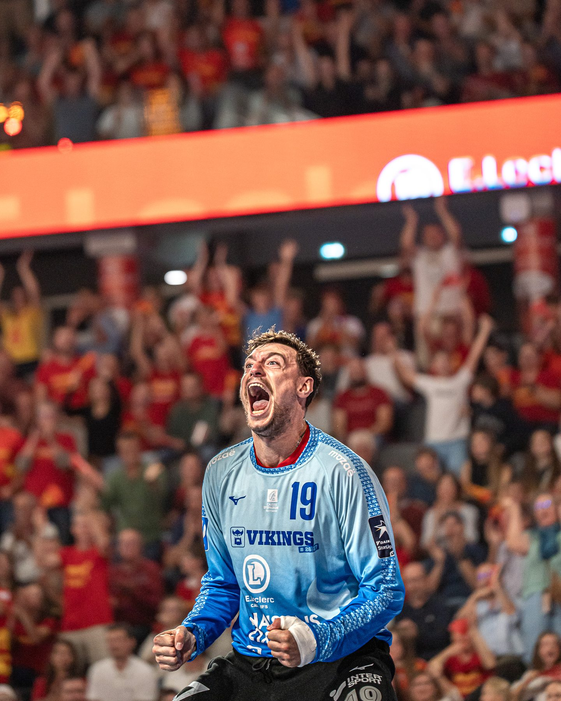
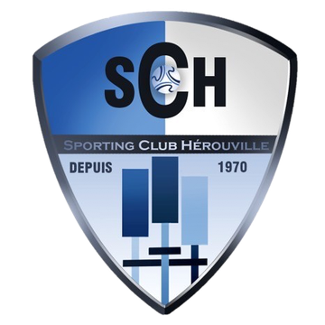
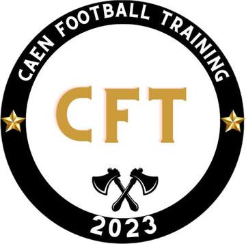
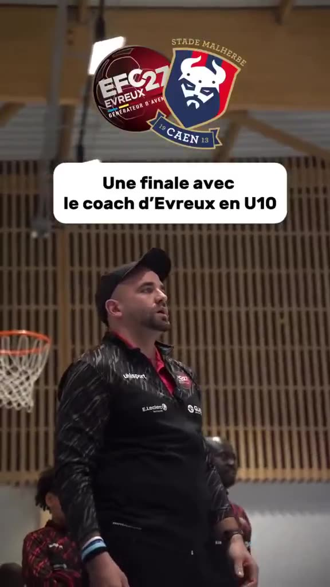
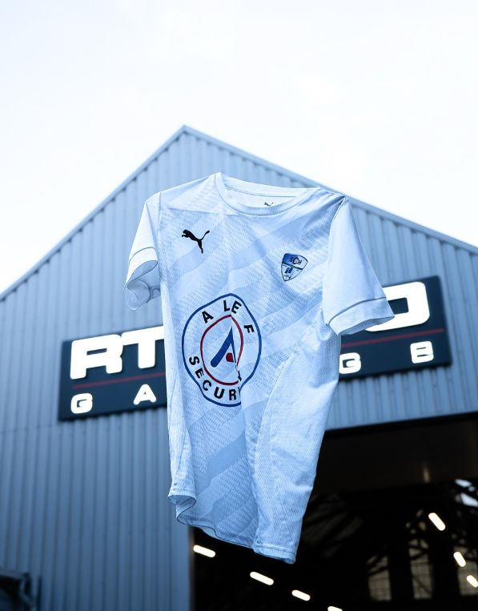

Match coverage
Pre-match, action, emotion, dressing room. An edited selection, ready to post.
Request a quote →
Portfolio · Season 2026–2027Based in Caen · Normandy, France
Football, handball, futsal. I cover matches, behind-the-scenes and events for clubs in Normandy, and deliver images ready for social media and sponsors.
Go straight to what matters to you.
My accreditation sheet is ready: identity, references, gear, contact. Copy it or download it as a PDF.
See the sheet → ClubComms managerMatches, media days, social content and sponsor visuals: I run a club's communications myself, so I deliver images that are ready to post.
Request a quote → Player · agentPlayer or agentAction shots and portraits for your profile, your social media or your recruitment file.
Book a shoot → Organisation · brandEventTournaments, galas, sponsor activations: the atmosphere, the key moments and your sponsors, on camera.
Tell me about your event →A tight selection, sport by sport. Hover over a photo to see its settings, click to open it full size.
Images like these for your club?
 Pitchside
PitchsideAbout
I am Head of Communications and Events at Sporting Club Hérouville, the football club with the most registered players in Normandy.
Photography is at the heart of my work: I know what a club needs from an image, because I'm the one who publishes it afterwards. I don't just deliver photos, I deliver content that serves the club's and its sponsors' communications.
The clubs I photograph during the season.

SC HérouvilleFootball · senior, youth, events Vikings de CaenHandball
Vikings de CaenHandball SM CaenFootball · U17 National league
SM CaenFootball · U17 National league Hérouville FutsalFutsal
Hérouville FutsalFutsal
Caen Football TrainingFutsalFor clubs, event organisers and sponsor brands.
Pre-match, action, emotion, dressing room. An edited selection, ready to post.
Request a quote →Player and staff portraits, team photos, kit launches.
Request a quote →Tournaments, galas, trophy ceremonies: the atmosphere and the key moments of the day.
Request a quote →Formats built for Instagram and TikTok: carousels, stories and short videos.
Request a quote →Images that showcase your sponsors: kits, boards, activations.
Request a quote →Every club has its own needs. Tell me the date, the venue and the format: I'll reply with a tailored proposal.
Get my quoteMy images don't stay on a hard drive: clubs publish, print and share them.




views in 30 days on SC Hérouville's social media (September 2026). I run the club's communications on my own, photos included.
Two Sony bodies and two f/2.8 zooms: enough to follow the action indoors and outdoors, even in low light.
33 MP full frame, at ease in sports halls.
APS-C, light, for behind-the-scenes.
Duels, shots, saves.
Dressing rooms, celebrations, portraits.
For press officers and organisers: everything you need in one place.
Download my sheet for your file, or copy my details to paste into your accreditation form.
Download the sheet (PDF) Confirm an accreditationThree steps, no commitment until you approve the proposal.
Date, venue, sport and what you need: the form below or a WhatsApp message is enough.
A clear offer, tailored to your event and your budget. Once you approve it, the date is booked.
I'm pitchside on the day, then I deliver an edited selection, ready for your social media and sponsors.
Contact